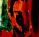

پذيرش > سایت نوشته ها > فتل های ناموسی / آزاد ثبوت / زنستان


 فتل های ناموسی / آزاد ثبوت / زنستان فتل های ناموسی / آزاد ثبوت / زنستان
27 تیر 1386 - - نسخه قابل چاپ
فتنه صباح، محقق مراکشي، در کتاب جذاب و خواندني «زنان در ضمير ناهشيار جوامع اسلامي» با شهامتي وصف ناپذير ميگويد: «ميخواهم به مردان جوان پرورش يافته در تمدن اسلامي مان بگويم غيرممکن است آنها بتوانند آزادي را در تعاملات فردي و انساني، خواه در بستر، دريک معاشقه عاشقانه يا در منازعات سياسي جاري در احزاب و پارلمان، ارج نهند بي آنکه از تبعات نفرت و انزجار زنان از اين فرهنگ پدرسالارانه آگاه باشند».
جملات فوق را به هنگام خواندن گزارشهايي از قساوتها و بي رحميهايي که همواره تحت عنوان عزت خانوادگي و شرافت قومي درباره زنان انجام ميشود به خاطر آوردم. گرچه چنين جنايتهايي به ندرت گزارش ميشوند اما صندوق جمعيت سازمان ملل متحد تخمين ميزند که هرساله بيش از ۵۰۰۰ زن در جهان به علل ناموسي توسط يکي از افراد ذکور خانواده شان به قتل ميرسند. به گزارش گروه بين المللي حقوق بشر زنان، اغلب اين قتلها در افغانستان، پاکستان، يمن، لبنان، اردن، مصر، کرانه باختري و غزه، بنگلادش، مراکش، سوريه، ترکيه، ايران، برزيل، عراق و نيز سوئد، اکوادور، کانادا، اوگاندا، ايالات متحده آمريکا و انگلستان روي ميدهد.
اين قتلها به عللي چون مقاومت در پذيرش ازدواجهاي از پيش تعيين شده، تقاضاي طلاق، هم کلام شدن يا برقراري تماس تلفني با مردان، تهيه نکردن به موقع غذا، در معرض تجاوز قرارگرفتن و نيز به اتهام خيانت در زناشويي روي ميدهد.
در ايالت سانليورفاي ترکيه، گردن زن جواني درميدان شهر زده شد، تنها به اين علت که ترانه عاشقانهاي در راديو به او تقديم شده بود. (روزنامه تورنتواستار، ۱۴ مه ۱۹۹۸). شواهد حاکي از آن است که اغلب قتلهاي ناموسي در جوامع مسلمان نشين روي ميدهند، حال آنکه فقه و مذهب اسلامي هرگز چنين رفتارهايي را مجاز ندانسته است. با اين وصف، اين پديده، کاملاً جهاني است.
در ماه مه سال ۲۰۰۱، طي يک کنفرانس دو روزه در لبنان راهکارهاي حقوقي جلوگيري از انجام اين قتلها و حذف قوانيني که به جنايتکاران اين امکان را ميدهد با آسودگي دست به اين اعمال بزنند، بررسي شد. به گفته يکي از حقوقدانان شرکت کننده در کنفرانس، در لبنان به رغم آنکه يکي از مدرن ترين کشورهاي خاورميانه به شمار ميرود، به طور متوسط درهر ماه يک زن توسط خويشاوندان ذکور خود به بهانه لکه دار کردن عفت خانوادگي به قتل ميرسد. اين در حالي است که آمار مذکور تنها محدود به موارد ارجاع شده به دادگاهها بوده است و حقوقدانان آمار واقعي را بسيار بيش از اينها ميدانند.
حقوقدان ديگري معتقد است: «اين قتلها اغلب انگيزههاي پنهاني دارند، مرداني که براي ازدواج مجدد خود در صدد رهايي از همسر فعلي خود هستند يا پدراني که لکه ننگ تجاوز به دخترشان را ميخواهند از ميان ببرند.» طبق گزارشها، اغلب مجرمان اذعان داشتهاند که تنها براي پاک کردن لکه ننگ خانوادگي دست به اين جنايت زدهاند. هرچند که طبق قوانين اصلاحي سال ۱۹۹۹ قانون جزاي لبنان، اين جنايت کاملاً محکوم شده اما همچنان در دادگاهها انگيزههاي مجرمان لحاظ شده و اغلب مجازات آنها به جاي قصاص، به چند ماه حبس خلاصه ميشود. اين در حالي است که چنين بخشايشي هيچگاه شامل حال زناني که ممکن است شوهرانشان را به علت خيانت در زناشويي به قتل رسانده باشند نميشود.
در برخي کشورها از جمله اردن، اين رفتارها کاملاً قانوني بوده و به ندرت مجازات ميشود. ماده ۳۴۰ قانون جزاي اردن کساني را که به علل ناموسي دست به قتل خويشاوندان مؤنث خود ميزنند از مجازات مبرا ميدارد. ملک عبدالله در سال ۲۰۰۱ قانوني موقتي را براي اعمال مجازاتهاي شديدتر در مقابله با قتلهاي ناموسي به تصويب رساند. اين قانون پس از چندي با مخالفت شديد مجلس اردن روبرو شد. نمايندگان پارلمان اردن مدعي بودند که اعمال مجازاتهاي شديدتر به نقض سنتهاي مذهبي و تخريب بافت جامعه محافظه کار اردن، که حرف آخر را در آن مردان ميزنند، ميانجامد.
خانم خوري نويسنده کتاب عشق ممنوعه که در آن داستان زندگي دوست کودکي خود داليا را که به خاطر علاقمند شدن به جوان بيگانهاي به طرز وحشيانهاي توسط پدرش به قتل رسيد، به تصوير کشيده است، ميگويد: «اين رسم ناموس کشي که وجود زن را در مالکيت خانواده ميداند، ريشه در دوران کهن زندگاني قبيلهاي ما دارد. از عهد حمورابي و اقوام آشور در ۱۲۰۰ سال پيش از ميلاد، تا آنجا که از نقطه نظر تاريخي اين سنت نه تنها به دوران پيش از اسلام، بلکه حتي به دوران پيش از مسيحيت بازمي گردد».
طبق شواهد تاريخي، زنان مسيحي بسياري نيز در روزگاران گذشته به اين ترتيب کشته شدهاند. همچنين گفته ميشود، اين سنت در پاکستان متعلق به قبايل بلوچ و پشتو بوده است.
عاصمه جهانگير، حقوقدان برجسته پاکستاني و بازپرس ويژه سازمان ملل اذعان ميدارد: «تحقيق و جستجو در اين باره به قدري خطرناک است که ما حتي نميتوانيم کوچکترين آماري از کشتارهاي ناموسي زنان در اين مناطق بدست آوريم.» در پي موارد متعدد گزارش شده، دولت پاکستان در ۸ دسامبر سال ۲۰۰۴ ميلادي قانوني را به تصويب رساند که بر اساس آن ناموسکشي محکوم شده و مجازات حبس و قصاص براي قاتلان در نظر گرفته ميشود. اما با وجود اين، بيشتر قتلها گزارش نميشوند و از آنجايي که قاتلان اغلب از خانواده قرباني هستند مورد بخشش قرار گرفته و يا با دادن مقداري پول به عنوان ديه، مجازات آنها حداکثر به چند سال زندان تقليل مييابد.
قتلهاي ناموسي اصليترين تخلف انجام شده نسبت به حقوق انساني زنان بوده و شديدترين شکل خشونت خانگي در سطح دنيا به شمار ميروند.
جامعه مصر نيز همچون بسياري از جوامع ديگر، از ديرباز بر اين سنت ضدانساني ارج نهاده و شرافت خانوادگي را در اطاعت محض زنان و دختران از آداب و سنن ميداند. با گرايشهاي قوي محافظه کاري در مصر، انتقاد آشکار از اين سنت، محکوم شده و منتقدان به انحراف از مذهب و سنن قومي و پيروي از قوانين غربي در حمايت از بي بندوباري زنان متهم ميشوند.
ماده ۱۷ قانون جزاي مصر قاضي را مجاز ميداند که مجازات در نظر گرفته شده براي قاتل را با توجه به برداشت خود از شرايط قاتل، به حداقل برساند. چنين تجديدنظرهايي گاه مجازات را به شش ماه حبس تقليل ميدهد.
اگر چه به سختي ميتوان به آمار درستي از قتلهاي ناموسي که سالانه در مصر اتفاق ميافتد دست يافت، اما گزارش منتشره بر مبناي سرشماري سال ۱۹۹۵ مصر، از مجموع ۸۱۹ قتل انجام شده در سال مورد سرشماري، ۵۲ مورد را قتلهاي ناموسي ميدانند. که از اين تعداد علل وقوع ٪۷۹ قتلها صرفاً ظن و گمان سوء بوده است. قاتلان نيز در ٪۴۱ موارد شوهر قرباني، ٪۳۴ پدر، ٪۱۸ برادر و در ٪۷ موارد از ميان ساير خويشاوندان او بودهاند.
قتلهاي ناموسي در همه جا مبتني بر سنتها و باورهاي خانوادههاي روستايي، فئودالي و قبيلهاي بوده است و از ميان نخواهد رفت مگر آنکه مردان ديدگاه خود را از زنان، به عنوان دارايي و اموال شخصيشان تغيير دهند.
در جايي که بازدارندهاي وجود نداشته باشد، هيچ تضميني نيز براي رعايت قانون وجود نخواهد داشت. زماني که حتي قوانين نيز بر ضد قشر خاصي از جامعه يعني زنان باشد، ديگر تضمين امنيتي براي آنها وجود نخواهد داشت. اما شايد مهمترين عامل اين پديده کمرنگ بودن حضور زنان در عرصه عمومي حيات اجتماعي است. بدون تأثير انساني آنها، ددمنشانه ترين رفتارها به عنوان يک هنجار پذيرفته شده است. در جامعهاي که زنان عمداً عقب نگهداشته شدهاند، به سختي ميتوان تصوير فئودالي و موجود در جامعه را اصلاح کرد.
در يک نظام پدرسالارانه که افراد جامعه در پيوندي تنگاتنگ با يکديگر قرار دارند و شديداً به يک شبکه حمايتي خويشاوندي وابستهاند، هويت فردي در هويت گروهي رنگ ميبازد. از اين رو، خواستها و ادعاهاي گروهي بر تمايلات فردي سايه ميافکند و ناموس کشي به عنوان محصول فرعي چنين جوامعي، به يک ابزار کاملاً پذيرفته شده براي تأديب کجرويها و برقراري توازن و همساني رفتاري درون جامعه تبديل ميشود.
زنستان
ارسال به
بالاترین
،
توییتر
،
فریندفید
،
فیسبوک
در همين بخش :
 یک خبر تلخ؟ یک قانونشکنی؟ یک تصمیم بخشنامهای جدید؟ یک خبر تلخ؟ یک قانونشکنی؟ یک تصمیم بخشنامهای جدید؟
چرا بایست به سکسوالیته پرداخت؟ / نفیسه آزاد
آزارجنسی خانگی؛ «قربانی» نه، «نجات یافته»
زنان، بزرگترین بازندگان بهار عرب
سانسور از دیدگاه جنسیتی/الهه امانی
ديگر بخش ها :
طرح یک میلیون امضا
|
مقالات
|
سایت نوشته ها
|
اخبار
|
گزارش كمپين
|
گفت و گو
|
علیه سکوت
|
كوچه به كوچه
|
نامه های شما
|
گزارش ویژه
|
گفتگو با اعضا
|
ویژه سالگرد کمپین
|
تصویر برابری
|
دل آرام علی
|
تریبون
|
مقالات
|
تاریخ شفاهی
|
خارج از چارچوب
|
کتابخانه
|
درباره کمپین
|
کمپین در شهرها
|
کمپین در بند
|
صدای تغییر
|
ویژه 22 خرداد
|
لایحه حمایت از خانواده
|
گالری
|
عشا مومنی
|
امیر یعقوبعلی
|
خدیجه مقدم
|
راحله عسگری زاده و نسیم خسروی
|
پروین اردلان،جلوه جواهری، مریم حسین خواه، ناهید کشاورز
|
زینب پیغمبرزاده
|
سعیده امین، سارا ایمانیان، محبوبه حسین زاده، ناهید کشاورز و همایون نامی
|
احترام شادفر
|
نسیم سرابندی زاده،فاطمه دهدشتی
|
وبلاگ مهمان
|
پرونده خرم آباد
|
دستگیری ها
|
مریم مالک
|
پرستو اللهیاری
|
مهرنوش اعتمادی
|
سمیه رشیدی
|
Other Languages
|
همراهان
|
«فراخوان کمپین ده روز با بهاره هدایت»
| English
|